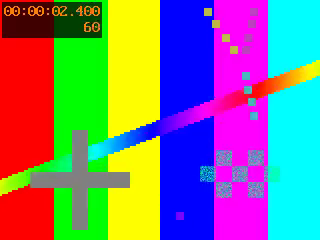
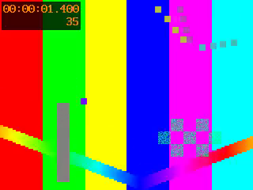

Sources whose video starts after their audio
-ss counts from the container's start, which is the earliest
stream's. On a broadcast capture the sound starts first (the DVB-T clip: 1.2 s before the first
picture), so every seek of "frame N" landed early, and the two kinds of untrimmed decode handled
the gap differently:
- Preview, before frame and trims showed frame N−25 on fixtures with a 1 s gap (frames 0–25 all showed frame 0).
- Untrimmed MKV/MP4 encodes began with 25 copies of the first picture; an MP4 then lost its last 25 pictures to the frame limit.
- Untrimmed TS encodes had the right pictures but the sound came out 1.01 s late (1.2 s on the DVB-T clip): every job on such a file, whatever its passes.
- The app counted the file, not the video: 158 frames for the DVB-T clip's 128, 125 for a 100-frame MKV.
1. The DVB-T clip's timestamps
Tests/TestResources/pal-dvbt-fieldcoded-25i.ts: field-coded H.264, 25i, open GOP.
The container's start_time is the audio's, 1.400 s. The video stream's
start_time is 2.722 s, which is its first packet, an I picture. Three B
pictures stored after it are shown before it:
| File order | Byte position | PTS (s) | Type | Shown as |
|---|---|---|---|---|
| 1 | 31396 | 2.722 | I | picture 3 |
| 2 | 81968 | 2.642 | B | picture 1 |
| 3 | 103024 | 2.602 | B | picture 0 |
| 4 | 117312 | 2.682 | B | picture 2 |
| 5 | 130472 | 2.882 | P | … |
So the first picture is at 2.602 s and the offset is 1.202 s (30 frames), not
the 1.322 s the stream's start_time suggests. The leading B pictures decode without a
single warning and are real pictures:
2. The fixtures
The DVB-T clip has a second fault on top of this one: an MPEG-TS seek lands on the next
keyframe. On that file alone, the two faults can't be told apart. So the fix is measured on
three constructed fixtures with known content, made by the committed
Tests/TestResources/generate_video_start_offset.sh:
- Video:
testsrc2, 320x240, 25 fps, 100 frames. Every frame differs, and each carries its own number and time burnt in. Source frames 25 and 75 are white. - Audio: 5 s of a quiet 200 Hz tone, with a 40 ms 1 kHz beep at the moments the white frames are shown.
- The gap: the video starts 1 s after the audio (
-itsoffset), so each beep lands on its flash when the file is played by its timestamps.
| Fixture | Streams | Container start | Video start | Offset |
|---|---|---|---|---|
late_video_intra.ts | H.264 all-intra + MP2 (all-intra, so a TS seek lands on the frame asked for) | 1.400 | 2.410 | 1.010 |
late_video.mkv | H.264, GOP 25, B-frames + FLAC | 0.000 | 1.000 | 1.000 |
late_video.mp4 | H.264, GOP 25, B-frames + AAC (an edit list holds the gap) | 0.000 | 1.000 | 1.000 |
A picture is identified by the MD5 of its luma plane, matched against a reference decode:
every stored picture once, in presentation order, decoded from the start without a seek
(-fps_mode passthrough). A worker preview is a PNG, so it goes through RGB and can't
hash the same. It is matched by mean absolute difference against every reference picture
instead, and the margin to the next-best match is reported.
Limit: MD5 identity says which picture was delivered, not that its colour is
right. Colour is covered by the reserved-tags and colour-tag reports.
3. What each path shows for frame N
Every pass off. "Before" is the worker and app on main; "after" is with the fix.
The app's before frame is PreviewGenerator.beforeFrameArgs, run as the app runs it.
Each number is the reference index of the picture shown (frame_probe.py).
| Source | Path | N=0 | 1 | 24 | 25 | 26 | 60 | last | Trim 30..59 | Untrimmed encode |
|---|---|---|---|---|---|---|---|---|---|---|
late_video_intra.ts |
preview, before | 0 | 1 | 5 | 5 | 5 | 35 | 74 | 5..34 | 125 frames: 0..99, then 25 repeats of 99 |
| before frame, before | 0 | 0 | 0 | 0 | 1 | 35 | 74 | |||
| preview, after | 0 | 1 | 24 | 25 | 26 | 60 | 99 | 30..59 | 100 frames, 0..99 | |
| before frame, after | 0 | 1 | 24 | 25 | 26 | 60 | 99 | |||
late_video.mkv |
preview, before | 0 | 0 | 5 | 5 | 5 | 35 | 74 | 5..34 | 125 frames: 25 copies of 0, then 0..99 |
| before frame, before | 0 | 0 | 0 | 0 | 1 | 35 | 74 | |||
| preview, after | 0 | 1 | 24 | 25 | 26 | 60 | 99 | 30..59 | 100 frames, 0..99 | |
| before frame, after | 0 | 1 | 24 | 25 | 26 | 60 | 99 | |||
late_video.mp4 |
preview, before | 0 | 0 | 5 | 5 | 5 | 35 | 74 | 5..34 | 100 frames: 25 copies of 0, then 0..74 (75..99 lost) |
| before frame, before | 0 | 0 | 0 | 0 | 1 | 35 | 74 | |||
| preview, after | 0 | 1 | 24 | 25 | 26 | 60 | 99 | 30..59 | 100 frames, 0..99 | |
| before frame, after | 0 | 1 | 24 | 25 | 26 | 60 | 99 | |||
pal-dvbt-fieldcoded-25i.ts(last = 125; GOPs, so the TS keyframe fault applies) |
preview, before | 2 | 3 | 8 | 8 | 8 | 33 | 117 | 3..32 | 158 frames: from picture 2 (0, 1 lost), 33 repeats of 125 at the end |
| before frame, before | 3 | 3 | 3 | 3 | 3 | 30 | 112 | |||
| preview, after | 0 | 1 | 33 | 33 | 33 | 61 | black | 30..59 | 128 frames: 0..125, two repeats at the end (below) | |
| before frame, after | 0 | 3 | 28 | 28 | 28 | 84 | none (ffmpeg writes nothing) |
Before the fix, a 1 s gap shifted everything 25 frames early, and the first 26 frames all collapsed onto picture 0 or 1. After the fix, every path is exact on all three fixtures. On the DVB-T clip, frame 0 is now its true first picture on both sides, and the trim and the untrimmed encode are exact. The preview and the before frame of other frames still land on a later keyframe (amber): that is the MPEG-TS seek fault, which this report doesn't fix. The preview decodes a window that starts a few frames before N, so its keyframe overshoot differs from the before frame's. The clip's keyframes are pictures 3, 31, 59, 87 and 115. A seek for any frame past the last one now finds no keyframe to land on: the preview of frames 120–127 is black and the before frame is empty. Before the fix, the same thing happened to the last 30 positions of a timeline that was 30 frames too long (128–157), which showed no real picture either. The fix moves the fault onto real frames, though fewer of them, and it ends when MPEG-TS seeks do. A preview match's MAD is about 4.6 on the fixtures and 2.1 on the DVB-T clip, against 9–12 and 3–5 for the next-best picture. Frame 25 ties with frame 75 (MAD 2.0 for both) because both are plain white.






late_video.mkv, frame 60, every pass off. Full size (320x240),
scaled nearest-neighbour. Look at the burnt-in counter: the old preview was 25 frames early,
exactly the 1 s gap.The DVB-T clip's two extra slots
The untrimmed decode now gives 128 slots for 126 stored pictures. The two repeats are the last two slots (125 and 127 repeat 124 and 125). They match two real 80 ms gaps in the clip's own timestamps at 7.522 → 7.602 → 7.682 s. So 128 is the clip's true length on the 25 fps grid, not a leading-repeat fault.
4. The frame count
| Source | What ffprobe gives | App, before | App, after | Untrimmed decode, after |
|---|---|---|---|---|
late_video_intra.ts | no nb_frames; stream 4.0 s, file 5.01 s | 125 | 100 | 100 |
late_video.mkv | no nb_frames, no stream duration; file 5.0 s | 125 | 100 | 100 |
late_video.mp4 | nb_frames 100 | 100 | 100 | 100 |
pal-dvbt-fieldcoded-25i.ts | no nb_frames; stream 5.0 s + 0.12 s leading; file 6.32 s | 158 | 128 | 128 |
The rule (FieldOrderDetector.frameCountFromDuration): when there is no
nb_frames, use the video stream's own duration plus its leading pictures. If the
stream has no duration either, use the container's duration less the offset. Variable-rate sources
keep their own rule (issue #137). Known limit, not fixed: an MKV with no per-stream
durations whose audio outlasts its video still over-counts by the audio's tail.
5. Sound and picture in sync
Each white frame's presentation time and each beep's onset are read from the output
file's own timestamps, so a stream that starts late in the output counts the way a player
would play it (sync_probe.py). Each flash is paired with the first beep from 0.5 s
before it to 1.5 s after. Beeps are 2 s apart and the fault being looked for is late sound, so
the pairing is unambiguous. 0 is right.
| Source | Case | Before (s) | After (s) | After: output layout |
|---|---|---|---|---|
late_video_intra.ts | untrimmed, sound copied | +1.0101, +1.0101 | +0.0001, +0.0001 | picture from 1.010 s, sound from 0 |
| untrimmed, Audio Restoration (limiter) | +1.0104 (the second flash has no beep: the sound was cut to the picture's length, 1 s early) | +0.0004, −0.0002 | picture from 1.010 s | |
| untrimmed, start the sound with the picture | — | +0.0004, +0.0004 | both from 0 | |
| trimmed 30..89, sound copied | +0.0101 | +0.0001 | copy cuts on a packet: sound 0.05 s ahead | |
| trimmed 30..89, restored | +0.0101 | +0.0001 | both from 0 | |
late_video.mkv | untrimmed, sound copied | +0.0001 (one flash: 25 frozen frames in front pushed frame 75 off the end) | +0.0001, −0.0003 | picture from 1.000 s |
| untrimmed, Audio Restoration (limiter) | +0.0004 (one flash) | +0.0004, −0.0003 | picture from 1.000 s | |
| untrimmed, start the sound with the picture | — | +0.0008, +0.0008 | both from 0 | |
| trimmed 30..89, sound copied | +0.0001 | −0.0003 | sound 0.195 s ahead (packet cut) | |
| trimmed 30..89, restored | +0.0002 | −0.0001 | both from 0 | |
late_video.mp4 | untrimmed, sound copied | +0.0001 (one flash) | +0.0001, −0.0002 | picture from 1.000 s |
| untrimmed, Audio Restoration (limiter) | +0.0004 (one flash) | +0.0004, −0.0002 | picture from 1.000 s | |
| untrimmed, start the sound with the picture | — | +0.0004, +0.0004 | both from 0 | |
| trimmed 30..89, sound copied | +0.0001 | −0.0002 | sound 0.259 s ahead (packet cut) | |
| trimmed 30..89, restored | +0.0001 | +0.0001 | both from 0 | |
late_video.mp4 | untrimmed, copied, MP4 output | +0.0001 (one flash) | +0.0001, +0.0001 | edit list holds the 1 s |
late_video_intra.ts | untrimmed, copied, AVI output | +1.0101, +1.0101 | +0.0001, +0.0001 | AVI has no start offset: ffmpeg writes null frames, shown as the first picture held |
The MKV/MP4 "before" rows are in sync because the 25 frozen frames happened to fill the gap. The TS rows were not: ffmpeg rebases a TS video to its own first timestamp, so the picture moved 1 s earlier and the sound did not. Trimmed jobs were in sync before as well, but on the wrong pictures (§3), since the picture and the sound were both seeked 25 frames early. Corrected during the work: the first version of the probe paired flashes and beeps in order and reported −2.0 s for the trimmed MKV/MP4 copies. A stream copy cuts on a packet boundary, so it keeps 0.2–0.26 s of sound from before the in-point, including frame 25's beep, which has no flash in the output. The pairing rule above fixed the probe; the outputs were right.
late_video_intra.ts, untrimmed, sound copied, drawn from the
measured output timestamps (sync_probe.py). Bars are each stream's span in the
output file; the marks are the white frames (blue) and the beeps (orange). Before, the picture
started at 0 and every beep came 1.01 s after its flash. After, the picture starts 1.010 s in, as
it does in the source, and each beep lands on its flash.6. Sources whose streams start together are unchanged
For every other fixture in Tests/TestResources, three outputs were compared
between the two workers (identity_probe.py): an untrimmed and a trimmed (10..40) FFV1
encode with the sound copied, compared by framemd5 of every stream, and the preview of
frame 10, compared by its PNG bytes.
Result: identical in every case:
colorize_test.mp4, face_restore_test.mp4,
hard_telecine_test.avi, interlaced_test.avi, pal-sd-25.mov,
prores422_10bit_telecine.mov, reserved_colour_tags.mov,
reserved_colour_tags_4444a.mov, seek_timebase_2997.mov,
small_clip.mp4, soft_telecine_test.mkv. The Rust unit tests also pin the
decoder and encoder arguments for an offset-0 job word for word.
start_time is the I picture, 0.12 s after the first picture
shown). But hard_telecine_test.avi (MPEG-2 in AVI, no audio) then read
0.067 s: its first two packets carry no PTS at all, so the smallest
listed PTS is the third picture's. The worker would have shifted every seek on that file
by two frames, and the app (which probes only when the stream starts after the container) would
not have. The offset is now the earlier of the stream's start_time and that smallest
PTS. That reads 0 on the AVI and 1.202 on the DVB-T clip, and the worker and the app run the same
ffprobe arguments (a test pins them word for word).
7. When to suggest "Start the sound with the picture"
Offsets across every fixture with a video stream (offset_probe.py):
| Offset | Files |
|---|---|
| 0 | 12 fixtures: MP4, MOV, MKV, AVI. (small_clip.mp4's first picture is at −0.100 s through its edit list, which still reads as 0.) |
| 1.000–1.010 | the three constructed fixtures |
| 1.202 | the DVB-T broadcast capture |
While building the plan, ffmpeg's own MPEG-TS muxer measured 10–21 ms between streams on
files whose streams were muxed together. That must not badge. The threshold is
0.25 s (videoStartSuggestThreshold). Limit: this rests on
one real broadcast clip. Camcorder .MTS files and other broadcasters were not
measured.
8. Decisions
- Frame N is the Nth picture from the video's first presented picture, never a
slot on the container's timeline. That is what the app already assumed wherever
nb_framesexists. Counting from the container would put 1.2 s of frozen picture at the start of every DVB-T timeline. - The untrimmed decode resets timestamps rather than seeking to the offset. A
seek on a TS hits the keyframe fault and lost a whole GOP on the DVB-T clip (it started at
picture 28).
setpts=PTS-STARTPTSwith no seek removes MKV/MP4's padding and keeps the TS's leading B pictures. Frame 0 never seeks, in the worker or the app, for the same reason. - Sync is kept by default, by delaying the picture. The source is not out of
sync: its sound and picture are aligned by their timestamps, and the video simply starts later.
Measured alternatives, from planning:
- A stream-copy
-sson the sound: 0.06–0.30 s off, and pads the video. -itsoffset: keeps the desync.- An exact re-encoded cut: in sync, but loses the sound before the picture.
settb=1/120000,setpts=PTS+…first in the one-vf, plus-enc_time_base) reproduces the source's layout with the sound copied losslessly. At the encoder's default 1/fps time base, the delay rounded to 10 ms off. 1/120000 is a whole number of ticks per frame at every broadcast rate. - A stream-copy
- Dropping the sound before the picture is a choice, in Audio Restoration. An exact cut needs the sound decoded, which is what that pass's render does. It has no value to enter, because the worker reads the gap from the timestamps.
- The detected gap is never put into Audio Restoration's sync offset. That control moves sound against picture. Prefilling it with 1.2 s would create a 1.2 s desync on top of the kept layout.
- No delay without sound. A file can start with a teletext or data stream and have no audio. Seeks still need the offset there, but the output doesn't need a delay.
9. Not fixed, not tested, limits
- MPEG-TS seeks that land on a later keyframe (a separate task). The DVB-T
clip's preview and before frame are still wrong between keyframes, and for frames past its last
keyframe (120–127) they are now black or empty (§3). Its trim 30..59 happened to come out
exact. That task should build on
source_decode::seek_time, the one place seek times are now computed. - Leading pictures that do not decode. A capture that starts mid-GOP, with missing references, would now keep its broken leading pictures as frames 0–2, where before two were dropped by accident. No such file was available to test.
- An MKV with no per-stream durations whose audio outlasts its video still over-counts by the audio's tail.
- Players: a video track that starts late was checked only by ffprobe/ffmpeg reading the outputs' timestamps. QuickTime, VLC and editors were not tried. If one shows the gap badly, Start the sound with the picture is the way out.
- A Custom FFmpeg Argument
-vfreplaces the encoder's filter chain, so it drops the delay as well. The job log warns. - Coverage: one broadcast clip and constructed fixtures. Apple Silicon only: the arithmetic is platform-independent, but no other platform's ffmpeg was run.
10. Reproducing
cd worker && cargo build # the "after" worker # a "before" worker: cargo build in a checkout of the commit before the fix, with deps/ BEFORE_WORKER=/path/to/before/worker/target/debug/vapourbox-worker \ docs/reports/2026-11-video-start-offset/scripts/run.sh
run.sh runs offset_probe.py (§1, §7), frame_probe.py
(§3, §4), sync_probe.py (§5), identity_probe.py (§6) and
images.py. Each takes the repo from its own location and its scratch directory from
$OFFSET_WORK. The fixtures are rebuilt by
Tests/TestResources/generate_video_start_offset.sh. The heavy test
app/test/integration_video_start_offset_test.dart checks the same pictures and sync
on every run. Run against the worker from before the fix, it fails 28 of its 40 cases. The 12
that pass are:
- frame 0;
- the frame-count checks, which are app-side;
- the TS fixture's untrimmed pictures;
- the trimmed sync cases (in sync before too, but on the wrong pictures);
- the offset-0 control.